Natori
Natori · Miyagi
Natori
Highlighted on the Miyagi map.
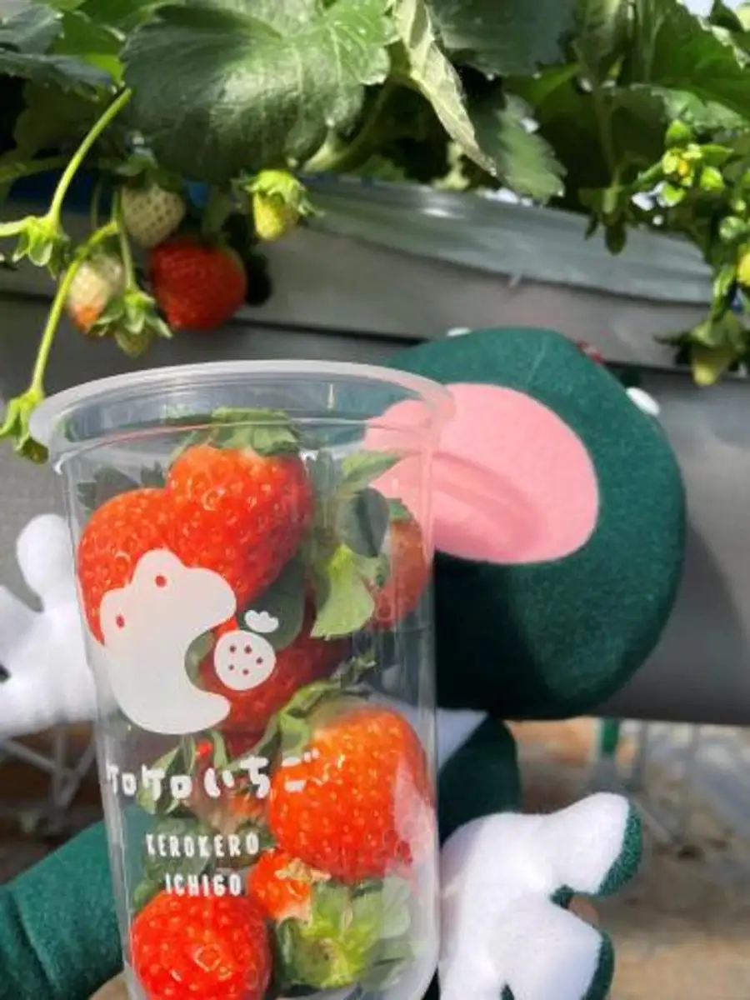
Stay
ホテルルートイン名取
Hoteruruutoin Natori

バリュー・ザ・ホテル仙台名取
バリュー・ザ・ホテル仙台名取
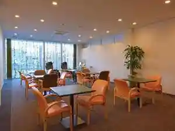
スーパーホテル仙台空港インター 天然温泉 名取岩沼・美人の湯
スーパーホテル仙台空港インター 天然温泉 名取岩沼・美人の湯
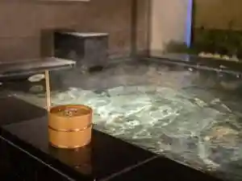
名取ゆりあげ温泉輪りんの宿
Natori Yuriage Onsen Wa Rinno Yado
Dining
杉のや
Sugi Noya
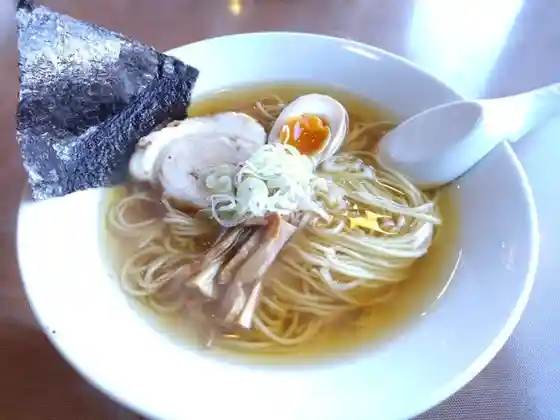
中華そば いぶし
Chuuka Soba Ibushi
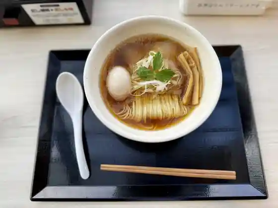
だし廊 -GoLD-
-GoLD-
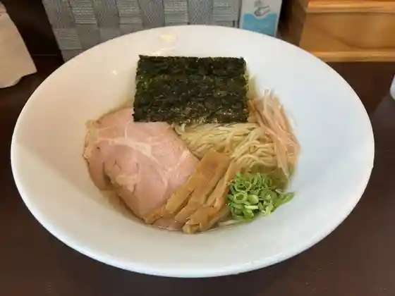
麺や 碁飯
Men Ya Go Meshi
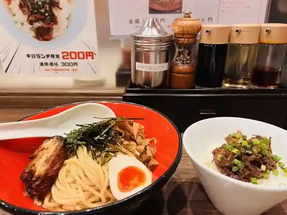
なると家
Naruto Ie
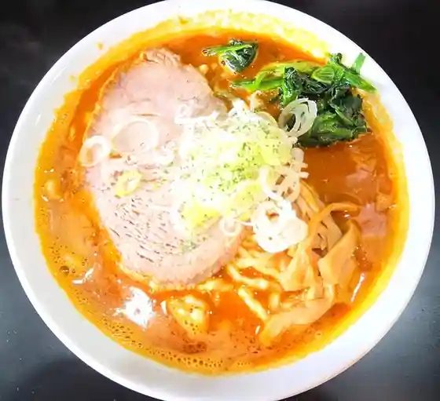
RAMEN Bee
RAMEN Bee
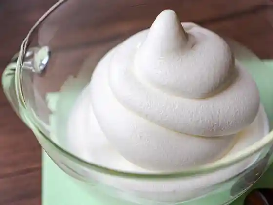
ナチュリノ
Nachurino
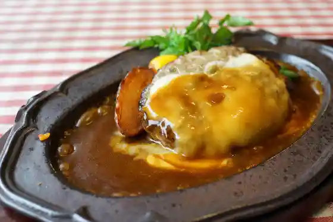
ハンバーグレストランHACHI 名取本店
Hanbaaguresutoran Hachi Natori Honten
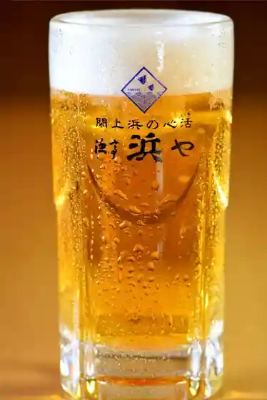
漁亭 浜や かわまちてらす閖上店
Ryou Tei Hama Ya Kawamachiterasu Yuriage Mise
Tohoku Trattoria TREGION GALLEY
Tohoku Trattoria TREGION GALLEY
牡蠣と海鮮丼 ふぃっしゃーまん亭
Kaki To Kaisen Donburi Fisshaaman Tei
麺屋 とがし 祭伝
Men Ya Togashi Matsuri Den
寿松庵 仙台空港店
Hisashi Shouan Sendaikuukou Mise
山形蕎麦と串揚げのお店 焔蔵 ATALATA店
Yamagata Soba To Kushi Age Noo Mise Honoo Kura Atalata Mise
牛たんの店
Ushi Tanno Mise Ikkyuu
焼き菓子とタルトの店 ナイツ・ブリッジ
焼き菓子とタルトの店 ナイツ・ブリッジ
閖上マリンキッチン
Yuriage Marinkitchin
浜や ゆりあげ港朝市メイプル館
Hama Ya Yuriage Minato Asaichi Meipuru Kan
カカポ・ベーカリー
カカポ・ベーカリー
牛タンレストラン陣中 仙台国際空港店
Gyuutan Resutoran Jinchuu Sendai Kokusaikuukou Mise
星さん家のハンバーグ
Hoshi San Ie No Hanbaagu
カフェモーツァルトユリイカ
Kafemootsuarutoyuriika
農家食堂 神明そば 慶
Nouka Shokudo Jinmei Soba Yoshi
市場直送 めし処 一
Shijou Chokusou Meshi Tokoro Ichi
イオンヤ
Ionya
そばの神田 町前屋 名取店
Sobano Kanda Machi Maeya Natori Mise
primo
primo
スリランカセンター
Surirankasentaa
たまご舎 愛島本店
Tamago Sha Ai Shimamoto Mise
たこ焼きイヴちゃん
Tako Yaki Ivu Chan
若草寿司
Wakakusa Sushi
ゆりあげ港食堂 HACHI
HACHI
甘仙堂 名取工場直営店
Kan Sendou Natori Koujouchokueiten
ひかり屋 イオンモール名取店
Hikari Ya Ionmooru Natori Mise
閖上浜のまかない処 浜や食堂
Yuriage Hama Nomakanai Tokoro Hama Ya Shokudo
カフェマルタ
Kafemaruta
寿司処鮨金
Sushi Tokoro Sushi Kin
ラーメン 天狗山 名取店
Raamen Tenguyama Natori Mise
サンドイッチ工房 victory cafe 名取店
victory cafe
ねぎっこ
Negikko
無問題
Mumon Dai
そば処 丸松 空港店
Soba Tokoro Maru Matsu Kuukou Mise
ずんだ茶寮 仙台空港店
Zunda Charyou Sendaikuukou Mise
カレー&糀ダイニング 空とぶぞう
Karee & Kouji Dainingu Sora Tobuzou
麺屋 幸
Men Ya Sachi
ミナモ カフェ
Minamo Kafe
ディッシュ
Disshu
Bistro TAKU
Bistro TAKU
おきたまや
Okitamaya
ぱんや こてつ
Panya Kotetsu
おおがまや たこ萬
Oogamaya Tako Man
新鮮餃子王
Shinsen Gyouza Ou
豊華 ゆりあげ港朝市
Yutaka Hana Yuriage Minato Asaichi
アグリブレッド
Aguribureddo
洋食喫茶ハングリー
Youshoku Kissa Hangurii
仙台牛タン福助 イオンモール名取店
Sendai Gyuutan Fukusuke Ionmooru Natori Mise
フリゴレス 名取店
Furigoresu Natori Mise
ミユキッチン
Miyukitchin
七輪炭火焼処すみ音
Shichirin Sumibi Yaki Shosu Mi Oto
食事処 千屋
Shokuji Tokoro Senya
亀のや
Kame Noya
味の一代 イオンモール名取店
Aji No Ichidai Ionmooru Natori Mise
カフェ・ド・ローズ
カフェ・ド・ローズ
末廣寿司 分店
Suehiro Sushi Bunten
フラットホワイト コーヒー ファクトリー 仙台空港店
Furattohowaito Koohii Fakutorii Sendaikuukou Mise
麺屋 小十郎 名取店
Men Ya Kojuurou Natori Mise
Laugh
Laugh
仙台辛み噌 味よしラーメン イオンモール名取店
Sendai Karami So Aji Yoshi Raamen Ionmooru Natori Mise
仙台空港カントリークラブ
Sendaikuukou Kantoriikurabu
高舘食道 水神蕎麦
Takadate Shokudo Suijin Soba
閖上海鮮丼せんしん
Yuriage Kaisen Donburi Senshin
ユニカ アジアンレストラン
Yunika Ajianresutoran
山根屋
Yamane Ya
ローストステージ
Roosutosuteeji
MMCオーガニックカフェ 仙台空港国内線店
Mmc Ooganikkukafe Sendaikuukou Kokunaisen Mise
久留米ラーメン 三代目よかろうもん
Kurume Raamen Sandaime Yokaroumon
そば処田舎
Soba Tokoro Inaka
中華食堂 勝龍
Chuuka Shokudo Shouryuu
サニア
Sania
ももや
Momoya
陣中 仙台空港店
Jinchuu Sendaikuukou Mise
ニラなんばんらーめん こうしゅう 名取西店
Nira Nanbanraamen Koushuu Natori Nishi Mise
中華麺房 東龍 名取店
Chuukamen Bou Touryuu Natori Mise
町田商店 名取店
Machida Shouten Natori Mise
第3倉庫 el camino
3 el camino
クロワッサン屋サクサク
Kurowassan Ya Sakusaku
ジェラテリア ナチュリノ＋（プロデュース）旅する おやつ製作所 めぐりの
Jierateria Nachurino + ( Purodeyuusu ) Tabi Suru Oyatsu Seisakusho Megurino
カフェテラス ソラ
Kafeterasu Sora
バリュー・ザ・ホテル仙台名取
バリュー・ザ・ホテル仙台名取
ゆりあげ港朝市
Yuriage Minato Asaichi
Gyu-29
Gyu-29
果実工房 果琳 イオンモール名取店
Kajitsu Koubou Ka Rin Ionmooru Natori Mise
ホワイトギョーザ サガノ家
Howaitogyooza Sagano Ie
すーぷかりー伊藤市郎商店 名取店
Suupukarii Itou Ichirou Shouten Natori Mise
木乃幡・別品館
木乃幡・別品館
やなぎ
Yanagi
田よし 名取店
Ta Yoshi Natori Mise
ばーすでい 名取本店
Baasudei Natori Honten
ビジネスラウンジ East side
East side
パン工房ゆがふ
Pan Koubou Yugafu
口福堂 イオンモール名取店
Koufuku Dou Ionmooru Natori Mise
MINAMO GELATO
MINAMO GELATO
五郎八
Gorohachi
U-cafe 美田園店
U-cafe
牛たん炭焼 利久 岩沼店
Ushi Tan Sumiyaki Toshihisa Iwanuma Mise
牛たん炭焼き 利久 名取店
Ushi Tan Sumiyaki Ki Toshihisa Natori Mise
アルパジョン ４号線岩沼店
Arupajon 4 Gousen Iwanuma Mise
ANAラウンジ 仙台空港
Ana Raunji Sendaikuukou
浜むすび かわまちてらす閖上店
Hama Musubi Kawamachiterasu Yuriage Mise
中華そば 杏林
Chuuka Soba Kyourin
コーヒー＆セッション パブロ
Koohii & Sesshon Paburo
朝市食堂 ひふみ
Asaichi Shokudo Hifumi
GORKHALI
GORKHALI
長尾中華そば 仙台名取店
Nagao Chuuka Soba Sendai Natori Mise
らぁめん鰹の本気 名取店
Raamen Katsuo No Honki Natori Mise
海鮮亭
Kaisen Tei
こうしゅう 名取店
Koushuu Natori Mise
味よし 名取店
Aji Yoshi Natori Mise
わらべ 名取店
Warabe Natori Mise
エスタシオンバル ナトリ
Esutashionbaru Natori
ティー リーフル
Teii Riifuru
3007 Piu
3007 Piu
考えた人すごいわ ブレッドパーク名取店
Kangae Ta Nin Sugoiwa Bureddopaaku Natori Mise
プロント 仙台国際空港店
Puronto Sendai Kokusaikuukou Mise
梵天食堂 名取店
Bonten Shokudo Natori Mise
萩
Hagi
ANAフェスタ 仙台ゲート店
Ana Fesuta Sendai Geeto Mise
和食飛賀屋
Washoku Hi Kaya
たこすけ
Takosuke
そば処 太陽
Soba Tokoro Taiyou
サクララウンジ 仙台空港
Sakuraraunji Sendaikuukou
Monsieur Masuno ARPAJON 名取箱塚店
Monsieur Masuno ARPAJON
台湾料理 太陽府
Taiwan Ryouri Taiyou Fu
ゆり唐あげ トビウメ
Yuri Tou Age Tobiume
あかぼし
Akaboshi
仙台カントリー倶楽部 名取コース
Sendai Kantorii Kurabu Natori Koosu
Coffee 焙煎所 Leka
Coffee Leka
ベーグル マルコ
Beeguru Maruko
たこやき極秘製造基地
Takoyaki Gokuhi Seizou Kichi
アリス ガーデン カフェ
Arisu Gaaden Kafe
デイリーポート新鮮館 中田店
Deiriipooto Shinsen Kan Nakada Mise
MOUNTAIN CAFE
MOUNTAIN CAFE
BakeShop HARU
BakeShop HARU
紅虎餃子房 イオンモール名取店
Kouko Gyouza Bou Ionmooru Natori Mise
喜久水庵 仙台空港店
Yoshihisa Mizu Iori Sendaikuukou Mise
びっくりドンキー 名取店
Bikkuri Donkii Natori Mise
スターバックス・コーヒー イオンモール名取2階店
スターバックス・コーヒー イオンモール名取2階店
R Baker 名取店
R Baker
スカイショップ ぶーめらん
Sukaishoppu Buumeran
麺処 海日和
Men Tokoro Umi Hiyori
ラーメン大連
Raamen Dairen
フーズガーデンゆりあげ 食彩館
Fuuzugaaden Yuriage Shokusai Kan
ウロコ水産
Uroko Suisan
kitchen 比呂
kitchen
温野菜 ごはんがおいしいスープ食堂 イオンモール名取店
Onyasai Gohangaoishii Suupu Shokudo Ionmooru Natori Mise
MMC ORGANIC CAFE 仙台空港国際線店
MMC ORGANIC CAFE
カフェ スマイル
Kafe Sumairu
スズタケ 閖上港朝市
Suzutake Yuriage Minato Asaichi
食堂 七福
Shokudo Shichi Fuku
BLOOM
BLOOM
山岡家 名取店
Yamaoka Ie Natori Mise
ゆで太郎 名取バイパス店
Yude Tarou Natori Baipasu Mise
炭焼ステーキ くに 名取店
Sumiyaki Suteeki Kuni Natori Mise
丸亀製麺 イオンモール名取店
Marugame Seimen Ionmooru Natori Mise
スターバックスコーヒー 名取増田店
Sutaabakkusukoohii Natori Masuda Mise
ピエトロ イオンモール名取店
Pietoro Ionmooru Natori Mise
野菜畑マルシェ かわまちてらす閖上店
Yasai Hatake Marushie Kawamachiterasu Yuriage Mise
油そば はてな 名取店
Abura Soba Hatena Natori Mise
守屋寿司
Moriya Sushi
餃子王 メイプル館内店
Gyouza Ou Meipuru Kannai Mise
ケロケロの杜
Kerokero No Mori
BAYFLOW cafe イオンモール名取
BAYFLOW cafe
香蘭
Kouran
salon de cafe anne
salon de cafe anne
まるしげ ゆりあげ港朝市店
Marushige Yuriage Minato Asaichi Mise
海の遊や
Umi No Yuu Ya
ともスズタケ
Tomo Suzutake
MIGAKI FARM SHOP&CAFE 閖上店
MIGAKI FARM SHOP&CAFE
mellowDay COFFEE
mellowDay COFFEE
福々だるま
Fukufuku Daruma
閖上ボンズコーヒーワークス
Yuriage Bonzukoohiiwaakusu
肉のいとう イオン名取店
Niku Noitou Ion Natori Mise
食樂体験型呑み喰い処 うま⭐︎ほど 美田園店
Shoku Raku Taiken Kata Nomikui Tokoro Uma ⭐ ⭐ Hodo Mita Sono Mise
食品館イトー 名取店
Shokuhinkan Itoo Natori Mise
ラーメン魁力屋 仙台南店
Raamen Kai Chikara Ya Sendai Minami Mise
五穀 名取店
Gokoku Natori Mise
リンガーハット イオンモール名取店
Ringaahatto Ionmooru Natori Mise
パンセ 名取本店
Panse Natori Honten
グランブッフェ イオンモール名取
Guranbuffe Ionmooru Natori
バケット イオンモール名取店
Baketto Ionmooru Natori Mise
かつや 名取店
Katsuya Natori Mise
ジョリーパスタ 名取杜せきのした店
Joriipasuta Natori Mori Sekinoshita Mise
ジョイフル 名取バイパス店
Joifuru Natori Baipasu Mise
丸亀製麵 名取店
Marugame Seimen Natori Mise
牛タンスタンド 閖上本店
Gyuutan Sutando Yuriage Honten
ホテルルートイン 名取
Hoteruruutoin Natori
らーめん 蔵
Raamen Kura
MENPIRE 壮
MENPIRE
カネチャンラーメン
Kanechanraamen
漁師直送 ウロコ水産 かわまちてらす閖上店
Ryoushi Chokusou Uroko Suisan Kawamachiterasu Yuriage Mise
大八
Daihachi
仙台食○
Sendai Shoku ○
みぃとぼぉる
Miitobooru
スーパーホテル 仙台空港インター
Suupaahoteru Sendaikuukou Intaa
魚匠 鈴栄
Sakana Takumi Suzu Sakae
森昭 ゆりあげ港朝市店
Mori Akira Yuriage Minato Asaichi Mise
NISHIKIYA KITCHEN 仙台国際空港店
NISHIKIYA KITCHEN
イオンスタイル 名取
Ionsutairu Natori
旬鮮酒場 なとり
Jun Sen Sakaba Natori
ゆりが丘リージェントハウス
Yuriga Oka Riijientohausu
スーパーホテル 美田園・仙台エアポート
スーパーホテル 美田園・仙台エアポート
アイザワミート ゆりあげ港朝市店
Aizawamiito Yuriage Minato Asaichi Mise
ダイトク
Daitoku
フレスコキクチ 名取増田店
Furesukokikuchi Natori Masuda Mise
森の芽ぶきたまご舎 イオンモール名取店
Mori No Me Bukitamago Sha Ionmooru Natori Mise
イオンシネマ 名取
Ionshinema Natori
ラ・リュン
ラ・リュン
チャウタリー アジアンレストラン
Chautarii Ajianresutoran
どっとや jiji
jiji
米粉ハウス エール
Beifun Hausu Eeru
びすとろCafe つがる
Bisutoro Cafe Tsugaru
ARC STAND
ARC STAND
らーめん堂仙台っ子 名取店
Raamen Dou Sendai Tsu Ko Natori Mise
上島珈琲店 イオンモール名取店
Kamishima Koohii Mise Ionmooru Natori Mise
しゃぶ菜 イオンモール名取店
Shabu Na Ionmooru Natori Mise
ゆず庵 名取店
Yuzu Iori Natori Mise
やよい軒 名取増田店
Yayoi Ken Natori Masuda Mise
新宿さぼてん イオンモール名取店
Shinjuku Saboten Ionmooru Natori Mise
珈琲所 コメダ珈琲店 イオンモール名取店
Koohii Tokoro Komeda Koohii Mise Ionmooru Natori Mise
焼肉冷麺やまなか家 名取店
Yakiniku Reimen Yamanaka Ie Natori Mise
菓匠三全 イオンモール名取店
Kashousanzen Ionmooru Natori Mise
喜久水庵 ナゴミ
Yoshihisa Mizu Iori Nagomi
かっぱ寿司 名取店
Kappa Sushi Natori Mise
ガスト 名取田高店
Gasuto Natori Takou Mise
ハート ブレッド アンティーク
Haato Bureddo Anteiiku
焼肉きんぐ 名取店
Yakiniku Kingu Natori Mise
吉野家 ４号線名取店
Yoshinoya 4 Gousen Natori Mise
牛角焼肉食堂 イオンモール名取店
Gyuukaku Yakiniku Shokudo Ionmooru Natori Mise
はま寿司 名取杜せきのした店
Hama Sushi Natori Mori Sekinoshita Mise
貢茶 イオンモール名取店
Mitsugu Cha Ionmooru Natori Mise
サーティワンアイスクリーム イオンモール名取店
Saateiwan'aisukuriimu Ionmooru Natori Mise
コナズ珈琲 名取店
Konazu Koohii Natori Mise
魚べい 名取店
Sakana Bei Natori Mise
三代目網元 魚鮮水産 名取杜せきのした店
Sandaime Amimoto Uosen Suisan Natori Mori Sekinoshita Mise
マクドナルド イオンモール名取店
Makudonarudo Ionmooru Natori Mise
自家製麺 七だし
Jikasei Men Shichi Dashi
Rainbow cafe 名取店
Rainbow cafe
陣中 牛タンスタンド 閖上店
Jinchuu Gyuutan Sutando Yuriage Mise
築地食堂 源ちゃん イオンモール名取店
Tsukiji Shokudo Gen Chan Ionmooru Natori Mise
みうらや ゆりあげ港朝市店
Miuraya Yuriage Minato Asaichi Mise
佐々木酒造店
Sasaki Shuzou Mise
高玉
Takadama
ミニストップ 仙台南インター店
Minisutoppu Sendai Minami Intaa Mise
チャイナ
Chaina
鮮魚とみ田
Sengyo Tomi Ta
あおい屋
Aoi Ya
ラ・フレーズ
ラ・フレーズ
せき亭 ゆりあげ店
Seki Tei Yuriage Mise
佐々直 かわまちてらす店
Sassa Choku Kawamachiterasu Mise
蔵タ家
Kura Ta Ie
BONDS COFFEE STAND イオンモール名取店
BONDS COFFEE STAND
大森食堂
Oomori Shokudo
百味屋
Hyakumi Ya
細野與治兵衛商店
Hosono Yo Jihee Shouten
ひより
Hiyori
からあげ 伊達や
Karaage Date Ya
菅井農園
Sugai Nouen
山野荘
Yamano Sou
名取ゆりあげ温泉 輪りんの宿
Natori Yuriage Onsen Wa Rinno Yado
カルディコーヒーファーム イオンモール名取店
Karudikoohiifaamu Ionmooru Natori Mise
喫茶マルネロ
Kissa Marunero
新潟らーめん 無尽蔵 味噌と出汁 なとり家
Niigata Raamen Mujinzou Miso To Dejiru Natori Ie
無添 くら寿司 名取店
Mu Soe Kura Sushi Natori Mise
モスバーガー 名取パーク店
Mosubaagaa Natori Paaku Mise
旬屋 スーパー銭湯極楽湯名取店
Jun Ya Suupaa Sentou Gokuraku Yu Natori Mise
カンテボーレ 新名取
Kanteboore Niina Shu
ドトールコーヒーショップ イオンモール名取店
Dotoorukoohiishoppu Ionmooru Natori Mise
サイゼリヤ アクロスプラザ杜せきのした店
Saizeriya Akurosupuraza Mori Sekinoshita Mise
ミスタードーナツ イオンモール名取ショップ
Misutaadoonatsu Ionmooru Natori Shoppu
レパコガーデン イオン名取店
Repakogaaden Ion Natori Mise
築地銀だこ イオンモール名取店
Tsukiji Gin Dako Ionmooru Natori Mise
マクドナルド 4号線岩沼店
Makudonarudo 4 Gousen Iwanuma Mise
スターバックスコーヒー イオンモール名取1階店
Sutaabakkusukoohii Ionmooru Natori 1 Kai Mise
吉野家 柳生店
Yoshinoya Yagyuu Mise
鎌倉パスタ イオンモール名取店
Kamakura Pasuta Ionmooru Natori Mise
マクドナルド ４号線名取店
Makudonarudo 4 Gousen Natori Mise
佐々直 本店
Sassa Choku Honten
モスバーガー イオンモール名取店
Mosubaagaa Ionmooru Natori Mise
ユウユウ店
Yuuyuu Mise
CHATERAISE 名取店
CHATERAISE
北海道手造りアイス あいすの家 イオンモール名取店
Hokkaidou Te Tsukuri Aisu Aisuno Ie Ionmooru Natori Mise
久世福商店 イオンモール名取店
Kuze Fuku Shouten Ionmooru Natori Mise
カフェ ザ イーチ タイム
Kafe Za Iichi Taimu
ゆりあげキッチン&ギャラリー メイプル館
Yuriage Kitchin & Gyararii Meipuru Kan
BEN BEN CAFE DCM名取店
BEN BEN CAFE DCM
カルン ザ・ビッグ名取店
カルン ザ・ビッグ名取店
世界のごちそう酒場 らふぃんぐ
Sekai Nogochisou Sakaba Rafingu
快活CLUB 4号名取店
CLUB 4
たかはし屋 ケーキもみの木
Takahashi Ya Keeki Momino Ki
あじわいの朝 名取店
Ajiwaino Asa Natori Mise
江戸前・大阪すし このみ寿司
江戸前・大阪すし このみ寿司
小室わさび屋 ゆりあげ港朝市店
Komuro Wasabi Ya Yuriage Minato Asaichi Mise
ロースター カフェ はなもも
Roosutaa Kafe Hanamomo
FACTORY GARDEN
FACTORY GARDEN
北條鮮魚店
Houjou Sengyoten
佐藤たこやき屋
Satou Takoyaki Ya
週末びっくり市 名取店
Shuumatsu Bikkuri Shi Natori Mise
洋食 コンセンテイ 目黒屋
Youshoku Konsentei Meguro Ya
ミニストップ 名取インター店
Minisutoppu Natori Intaa Mise
美食農園 ラ・ファータ 2nd 北釜ハウス
美食農園 ラ・ファータ 2nd 北釜ハウス
宮城マイクロブルワリー ゆりあげ麦酒醸造所
Miyagi Maikuroburuwarii Yuriage Biiru Jouzousho
ダルバール 名取が丘店
Darubaaru Natori Ga Oka Mise
ピュアママキッチン
Pyuamamakitchin
清昇堂
Kiyoshi Noboru Dou
Cafe うま芋屋
Cafe
さざほざ
Sazahoza
ドルチェクレープ
Doruchekureepu
LAWSON 名取愛島台店
LAWSON
セブンイレブン 名取上余田店
Sebun'irebun Natori Ue Yoda Mise
猫カフェアミパ 名取店
Neko Kafeamipa Natori Mise
菅井商店
Sugai Shouten
那智が丘カフェ シンシア
Nachi Ga Oka Kafe Shinshia
roxane
roxane
閖上引地商店
Yuriage Hikichi Shouten
代官山Candyapple イオンモール名取店
Candyapple
幸楽苑 名取大手町店
Kouraku En Natori Ootemachi Mise
CoCo壱番屋 名取植松店
Coco Ichiban Ya Natori Uematsu Mise
日乃屋カレー 名取店
Nichi No Ya Karee Natori Mise
ささ圭 ゆりあげ港朝市店
Sasa Kei Yuriage Minato Asaichi Mise
スーパーセンタートライアル 名取店
Suupaasentaatoraiaru Natori Mise
味の金魂
Aji No Kinkon
居酒屋 竹灯り
Izakaya Take Akari
リトナベリーガーデン
Ritonaberiigaaden
花茶屋
Hanacha Ya
ビッグのパン屋さん 名取店
Biggu No Pan Ya San Natori Mise
サンリオ ギフト ゲート イオンモール名取店
Sanrio Gifuto Geeto Ionmooru Natori Mise
みよし
Miyoshi
コート・ダジュール 仙台名取店
コート・ダジュール 仙台名取店
春月
Shungetsu
ヴィレッジヴァンガード イオンモール名取店
Virejjivangaado Ionmooru Natori Mise
そば処 揚司
Soba Tokoro You Tsukasa
まる勘
Maru Kan
自然や あかり
Shizen Ya Akari
カミヤファクトリー
Kamiyafakutorii
伊東寿司
Itou Sushi
愛島餃子
Ai Shima Gyouza
AGAPE こどもしょくどう
Agape Kodomoshokudou
マハロダイニング 名取りんくう店
Maharodainingu Natori Rinkuu Mise
第一楼 新名取店
Daiichi Rou Niina Shu Mise
やきとりの扇屋 名取杜せきのした店
Yakitorino Ougiya Natori Mori Sekinoshita Mise
ビアードパパの作りたて工房 イオンモール名取店
Biaadopapa No Tsukuri Tate Koubou Ionmooru Natori Mise
ケンタッキーフライドチキン イオンモール名取店
Kentakkiifuraidochikin Ionmooru Natori Mise
ケンタッキーフライドチキン 名取バイパス店
Kentakkiifuraidochikin Natori Baipasu Mise
GODIVA イオンモール名取
GODIVA
味のまるまつ 美田園店
Aji Nomarumatsu Mita Sono Mise
日本一 イオンモール名取店
Nippon'ichi Ionmooru Natori Mise
ささ圭 名取増田店
Sasa Kei Natori Masuda Mise
ねこねこ食パン イオンモール名取店
Nekoneko Shoku Pan Ionmooru Natori Mise
モア カフェ 仙台南店
Moa Kafe Sendai Minami Mise
からあげの匠 名取バイパス店
Karaageno Takumi Natori Baipasu Mise
菓匠 三全 仙台南インター店
Kashou San Zen Sendai Minami Intaa Mise
デイリーヤマザキ 仙台空港店
Deiriiyamazaki Sendaikuukou Mise
ディッパーダン イオンモール名取FC店
Dippaadan Ionmooru Natori Fc Mise
ウジエスーパー 美田園店
Ujiesuupaa Mita Sono Mise
ポムの樹Jr. イオンモール名取店
Pomu No Ki Jr . Ionmooru Natori Mise
つつみ屋 名取店
Tsutsumi Ya Natori Mise
牛角 名取店
Gyuukaku Natori Mise
すたみな太郎 PREMIUM BUFFET 名取店
PREMIUM BUFFET
地酒や 華の蔵 空港店
Jizake Ya Hana No Kura Kuukou Mise
銀座コージーコーナー イオン名取店
Ginza Koojiikoonaa Ion Natori Mise
タリーズコーヒー オルフィーカ美田園店
Tariizukoohii Orufiika Mita Sono Mise
馳走菜 名取増田店
Chisou Na Natori Masuda Mise
CHEESE GARDEN
CHEESE GARDEN
ホテルルートイン 名取岩沼インター 仙台空港
Hoteruruutoin Natori Iwanuma Intaa Sendaikuukou
ほっともっと 名取大手町店
Hottomotto Natori Ootemachi Mise
ごはんどき 名取店
Gohandoki Natori Mise
サーティワンアイスクリーム イオンタウン名取店
Saateiwan'aisukuriimu Iontaun Natori Mise
然の膳 宮城県立がんセンター店
Zen No Zen Miyagiken Ritsu Gan Sentaa Mise
たぬき屋
Tanuki Ya
ナポリの窯 名取バイパス店
Napori No Kama Natori Baipasu Mise
炭焼牛たん東山 かわまちてらす閖上店
Sumiyaki Ushi Tan Higashiyama Kawamachiterasu Yuriage Mise
ひとくち茶屋 名取田高SC店
Hitokuchi Chaya Natori Takou Sc Mise
ヨークベニマル 名取愛島店
Yookubenimaru Natori Ai Shima Mise
村さ来 名取駅前店
Murasaki Natori Ekimae Mise
カネハチ
Kanehachi
本家かまどや 名取店
Honke Kamadoya Natori Mise
ナポリの窯 名取店
Napori No Kama Natori Mise
ささ圭 工場併設植松店
Sasa Kei Koujou Heisetsu Uematsu Mise
魚民 名取店
Uotami Natori Mise
丸健
Maru Takeshi
ほっともっと 名取美田園店
Hottomotto Natori Mita Sono Mise
モンペリエ ヨークベニマル名取バイパス店
Monperie Yookubenimaru Natori Baipasu Mise
オーサム ストア イオンモール名取店
Oosamu Sutoa Ionmooru Natori Mise
ことり舟
Kotori Fune
幸楽苑のからあげ家 名取大手町店
Kouraku En Nokaraage Ie Natori Ootemachi Mise
モンペリエ ヨークベニマル名取西店
Monperie Yookubenimaru Natori Nishi Mise
午前めし･くじら 一
Gozen Meshi Meshi Kujira Ichi
炭火やきとり竜鳳 トライアル名取店
Sumibi Yakitori Ryuuhou Toraiaru Natori Mise
花の茶屋
Hana No Chaya
モンペリエ ヨークベニマル名取愛島店
Monperie Yookubenimaru Natori Ai Shima Mise
あかぼし 名取ヶ丘店
Akaboshi Natori Ke Oka Mise
無印良品 イオンモール名取店
Mujirushiryouhin Ionmooru Natori Mise
酒処ホルモン サッポロ
Sake Tokoro Horumon Sapporo
セブンイレブン 名取増田8丁目店
Sebun'irebun Natori Masuda 8 Choume Mise
さくらい水産
Sakurai Suisan
肉の匠 いとう 名取イオン店
Niku No Takumi Itou Natori Ion Mise
今野精肉店
Konno Seinikuten
東海龍
Toukai Ryuu
子供の居場所○○
Kodomo No Ibasho ○ ○
MOJA 名取店
MOJA
ビッグママ・おいしいパン屋さん みやぎ生協名取西店
ビッグママ・おいしいパン屋さん みやぎ生協名取西店
マシッソお弁当
Mashisso O Bentou
そば処 めん六や 宮城名取美田園店
Soba Tokoro Men Roku Ya Miyagi Natori Mita Sono Mise
仙令平庄 イオンモール名取店
Sen Rei Taira Shou Ionmooru Natori Mise
マッフェン マックスバリュ名取店
Maffen Makkusubaryu Natori Mise
みなとまち菓子店
Minatomachi Kashi Mise
LAWSON 名取閖上店
LAWSON
luvU 名取店
luvU
La Pause
La Pause
スターバックスコーヒー イオンモール名取1階店
Sutaabakkusukoohii Ionmooru Natori 1 Kai Mise
まぼ屋 閖上出張所
Mabo Ya Yuriage Shutchousho
鰊御殿 番屋
Nishin Goten Banya
セブンイレブン 名取北高前店
Sebun'irebun Natori Kita Taka Mae Mise
閖上たこやき
Yuriage Takoyaki
洋葱亭
Hiroshi Negi Tei
ラボ&キッチン
Rabo & Kitchin
白松がモナカ本舗 仙台南店
Shiramatsu Ga Monaka Honpo Sendai Minami Mise
不二家 ヨークベニマル名取西店
Fujiya Yookubenimaru Natori Nishi Mise
ファミリーマート 名取マルハン/Ｓ店
Famiriimaato Natori Maruhan / S Mise
SiNYU
SiNYU
そば名取
Soba Natori
ツルハドラック 名取増田店
Tsuruhadorakku Natori Masuda Mise
野菜畑 ゆりあげ港朝市
Yasai Hatake Yuriage Minato Asaichi
蒲鉾本舗高政 仙台空港特設催事場
Kamaboko Honpo Takamasa Sendaikuukou Tokusetsu Saiji Ba
Re'sta
Re&39sta
ミニストップ 名取せきのした店
Minisutoppu Natori Sekinoshita Mise
ピザ カルボ イオンタウン名取店
Piza Karubo Iontaun Natori Mise
ささ圭 かわまちてらす閖上店
Sasa Kei Kawamachiterasu Yuriage Mise
美食農園 ラ・ファータ
美食農園 ラ・ファータ
かまぼこの鐘崎 仙台南店
Kamabokono Kanezaki Sendai Minami Mise
エール・エル 仙台名取店
エール・エル 仙台名取店
白謙 仙台空港店
Shiro Ken Sendaikuukou Mise
阿部蒲鉾店 イオン名取店
Abe Kamaboko Mise Ion Natori Mise
natori sun
natori sun
フレスコ キクチ 美田園店
Furesuko Kikuchi Mita Sono Mise
ファミリーマート 名取美田園二丁目店
Famiriimaato Natori Mita Sono Nichoume Mise
NewDays KIOSK 名取店
NewDays KIOSK
白謙 イオンモール名取店
Shiro Ken Ionmooru Natori Mise
ピュアハート キッズランド イオンモール名取
Pyuahaato Kizzurando Ionmooru Natori
NISHIKIYA KITCHEN イオンモール名取店
NISHIKIYA KITCHEN
さくらい水産
Sakurai Suisan
セブンイレブン 名取美田園店
Sebun'irebun Natori Mita Sono Mise
旬海堂
Jun Kaidou
ふぇり～ちぇ
Feri ~ Che
みやぎ生協 名取西店
Miyagi Seikyou Natori Nishi Mise
産直ハウス 金時村
Sanchoku Hausu Kintoki Mura
馬上かまぼこ店 名取店
Bajou Kamaboko Mise Natori Mise
佐々直 名取店
Sassa Choku Natori Mise
ファミリーマート 名取植松一丁目店
Famiriimaato Natori Uematsu Itchoume Mise
よりみち
Yorimichi
ピザ カルボ イオンタウン名取店
Piza Karubo Iontaun Natori Mise
マイピッグカフェ イオンモール名取店
Maipiggukafe Ionmooru Natori Mise
スプリント
Supurinto
たての家
Tateno Ie
クツロギサカバ カケル
Kutsurogisakaba Kakeru
セブンイレブン 名取下増田店
Sebun'irebun Natori Shita Masuda Mise
セブンイレブン 名取館腰駅前店
Sebun'irebun Natori Tatekoshi Ekimae Mise
カワチ薬品 美田園店
Kawachi Yakuhin Mita Sono Mise
梟
Fukurou
プレーゴ
Pureego
相馬屋菓子店
Souma Ya Kashi Mise
ぼくの色
Bokuno Iro
シーフードレストラン びあんこ
Shiifuudoresutoran Bianko
ドローイング
Dorooingu
日の出寿司
Hinode Sushi
ブルネット
Burunetto
やきとり ゆう次郎
Yakitori Yuu Jirou
セブンイレブン 名取本郷店
Sebun'irebun Natori Hongou Mise
マリアージュ アン ヴィラ
Mariaaju An Vira
bar F
bar F
ファンケルハウスＪ イオンモール名取店
Fankeruhausu J Ionmooru Natori Mise
カラオケ BanBan 名取店
BanBan
居酒屋ゆめ
Izakaya Yume
Gyutan no Mise
Gyutan no Mise
Sapporo Beer Sendai Beergarden Natorihonkan
Sapporo Beer Sendai Beergarden Natorihonkan
Jushoan Sendai Airport
Jushoan Sendai Airport
Charcoal Grilled Steak Kuni Natori
Charcoal Grilled Steak Kuni Natori
Gyutan Sumiyaki Rikyu Natori
Gyutan Sumiyaki Rikyu Natori
Kimchi Kantanya
Kimchi Kantanya
Kikusui An Sendai Airport
Kikusui An Sendai Airport
Baked Sweets and Tart Shop Knights Bridge
Baked Sweets and Tart Shop Knights Bridge
Gyutan Sumiyaki Rikyu Iwanuma
Gyutan Sumiyaki Rikyu Iwanuma
Ringer Hut Aeon Mall Natori
Ringer Hut Aeon Mall Natori
Cafe Malta
Cafe Malta
World Feast Tavern Luffing of
World Feast Tavern Luffing of
Benitora Gyozabo AEON MALL Natori
Benitora Gyozabo AEON MALL Natori
Chuka Soba Ibushi
Chuka Soba Ibushi
White Gyoza Saganoya
White Gyoza Saganoya
Shinmei Buckwheat Noodle Kei
Shinmei Buckwheat Noodle Kei
Pronto Sendai International Airport
Pronto Sendai International Airport
Soba Marumatsu Sendai Airport
Soba Marumatsu Sendai Airport
Inonia
Inonia
Mochimochi No Ki Sendai
Mochimochi No Ki Sendai
Enzo Atalata
Enzo Atalata
Enatsu
Enatsu
McDonald s Aeon Mall Natori
McDonald s Aeon Mall Natori
Joyful Natorbypass
Joyful Natorbypass
Kokosunatoriten
Kokosunatoriten
Sri Lanka Center
Sri Lanka Center
Hamaichiban
Hamaichiban
Curry House CoCo Ichibanya Natori Uematsu
Curry House CoCo Ichibanya Natori Uematsu
Kukusuian Natori
Kukusuian Natori
Echigo Hizomen Mujinzo Natoriya
Echigo Hizomen Mujinzo Natoriya
Gusto Natori Takou
Gusto Natori Takou
Ramen Kairikiya Sendai Minami
Ramen Kairikiya Sendai Minami
Shanghai Mura Yuriage Port Morning Market Maple Hall
Shanghai Mura Yuriage Port Morning Market Maple Hall
Shionone
Shionone
Muten Kurazushi Natori
Muten Kurazushi Natori
Birthday Natori Main Store
Birthday Natori Main Store
Cybele No Mori Natori
Cybele No Mori Natori
Yuyuten
Yuyuten
Ebi Tsukemen En Natori
Ebi Tsukemen En Natori
Chinese Dining Shoryu
Chinese Dining Shoryu
Saizeriya Natori Iinozaka
Saizeriya Natori Iinozaka
Mikan
Mikan
Nagasaki Champon Ringerhut Aeon Mall Natori Airy
Nagasaki Champon Ringerhut Aeon Mall Natori Airy
Stamina Taro Miyagi Natori
Stamina Taro Miyagi Natori
Pasta Cafe Rosso
Pasta Cafe Rosso
Ramen Kue
Ramen Kue
Ramen Yamaokaya Natori
Ramen Yamaokaya Natori
Chinese Restaurant Matchatei
Chinese Restaurant Matchatei
Mister Donut Aeon Mall Natori
Mister Donut Aeon Mall Natori
Tendo Seimen
Tendo Seimen
Chinese Food Chuka Menbotoryu Natori
Chinese Food Chuka Menbotoryu Natori
Mont Dor Iwanuma Bypass
Mont Dor Iwanuma Bypass
Flatwhite Coffee Factory Sendai Airport
Flatwhite Coffee Factory Sendai Airport
Hamazushi Natori Morisekinoshita
Hamazushi Natori Morisekinoshita
Kobe Motomachi Doria Aeon Mall Natori
Kobe Motomachi Doria Aeon Mall Natori
Shichirin Sumibiyakidokoro Sumine
Shichirin Sumibiyakidokoro Sumine
Bucket Aeon Mall Natori
Bucket Aeon Mall Natori
Koshu Natori
Koshu Natori
Cocofrans Aeon Mall Natori
Cocofrans Aeon Mall Natori
Marumatsu Mitazono
Marumatsu Mitazono
Takigawa Pan
Takigawa Pan
Kakure Ann Shinobuya Natori
Kakure Ann Shinobuya Natori
Sobadokoro Inaka
Sobadokoro Inaka
Gokurakuyu Natori Oshokuji Dokoro Shunya
Gokurakuyu Natori Oshokuji Dokoro Shunya
Milky Way Natorimasudaten
Milky Way Natorimasudaten
Amasendo
Amasendo
Seasonal Cuisine Kogyoku
Seasonal Cuisine Kogyoku
Tempura Ichidai Natori
Tempura Ichidai Natori
Goo Pasta Natori Aeon Mall
Goo Pasta Natori Aeon Mall
Taiyo Soba Restaurant
Taiyo Soba Restaurant
Ramen Showaya Natori
Ramen Showaya Natori
Yuzuan Natori
Yuzuan Natori
Komeda Coffee Aeon Mall Natori
Komeda Coffee Aeon Mall Natori
Bonten Natori
Bonten Natori
Atalata Marche
Atalata Marche
Dammaya Suisan Natori Masuda
Dammaya Suisan Natori Masuda
Nagomi Shirokiya Natori
Nagomi Shirokiya Natori
Indian Style Vegetable Curry Rakuten Hanmock
Indian Style Vegetable Curry Rakuten Hanmock
Pom Carry Aeon Mall Natori
Pom Carry Aeon Mall Natori
Ramen Do Sendaikko Natori
Ramen Do Sendaikko Natori
Grand Buffet Natori
Grand Buffet Natori
Gin no An Aeon Mall Natori
Gin no An Aeon Mall Natori
Suzuran
Suzuran
Mori no Mebuki Tamagoya Aeon Mall Natori
Mori no Mebuki Tamagoya Aeon Mall Natori
Maritcho House
Maritcho House
Bincho Ougiya Natorimori Seki No Shita
Bincho Ougiya Natorimori Seki No Shita
Ramen Dairen
Ramen Dairen
Estacion Bar Natori
Estacion Bar Natori
Rocky
Rocky
Jolly Pasta Natori Morisekinoshita
Jolly Pasta Natori Morisekinoshita
Bonne Journee
Bonne Journee
Mori no Pizza Factory Revoir Aeon Mall Natori
Mori no Pizza Factory Revoir Aeon Mall Natori
Gyukaku Natori
Gyukaku Natori
Harumi Shokudo
Harumi Shokudo
Koryori Shino
Koryori Shino
Yoshoku Konsente Meguroya
Yoshoku Konsente Meguroya
Momantai
Momantai
Oshokuji Dokoro Temari
Oshokuji Dokoro Temari
Gindaco Aeon Mall Natori
Gindaco Aeon Mall Natori
Tea Leafull
Tea Leafull
Roku Farm Atalata
Roku Farm Atalata
Nantamaya Aeon Town Natori
Nantamaya Aeon Town Natori
Karaoke Party Cote D Azur Sendai Natori
Karaoke Party Cote D Azur Sendai Natori
Tokyoton Cafe
Tokyoton Cafe
Rairaiken Hanten
Rairaiken Hanten
Ark Nailcafe
Ark Nailcafe
Hello Kitty Dim Sum Shaoron
Hello Kitty Dim Sum Shaoron
Cantevole Shin Natori
Cantevole Shin Natori
Shuryo Jun
Shuryo Jun
Buryu
Buryu
Koryori Miyagi
Koryori Miyagi
Dandelion Izakaya
Dandelion Izakaya
Nakani Shokudo
Nakani Shokudo
Koryori Hiro
Koryori Hiro
Irohaya
Irohaya
Darumaya
Darumaya
Wakian
Wakian
Benihana
Benihana
Dommaru Ichiriki Natorigaoka
Dommaru Ichiriki Natorigaoka
Shihogama Ya Shokudo
Shihogama Ya Shokudo
Tora Neko Donchan No Daidokoro
Tora Neko Donchan No Daidokoro
Kuzuryu
Kuzuryu
Koran
Koran
Ebisuya Honpo Natori
Ebisuya Honpo Natori
Ito Sushi
Ito Sushi
Tamaki Ramen
Tamaki Ramen
Kushiyaki Rakushu Moja Natori
Kushiyaki Rakushu Moja Natori
Chizugaden Ionmoru Natori
Chizugaden Ionmoru Natori
Motortown Ninety Nine
Motortown Ninety Nine
Chukonen Hanten
Chukonen Hanten
Somaya Pastry
Somaya Pastry
Tobiume Kawamachi Terrace
Tobiume Kawamachi Terrace
Yakiichi
Yakiichi
Gandhara Cafe Natori
Gandhara Cafe Natori
Ramen Embu Natori
Ramen Embu Natori
Les Fille Sendai Airport
Les Fille Sendai Airport
Amusement Bar F
Amusement Bar F
Naples Shokudou Makanai tei Natori
Naples Shokudou Makanai tei Natori
Nomidokoro Yuzu
Nomidokoro Yuzu
Sazaboza
Sazaboza
Bluno
Bluno
Kitchen Hiro
Kitchen Hiro
Dosanko Natori
Dosanko Natori
Uosen Suisan Natori Sekinoshita
Uosen Suisan Natori Sekinoshita
Pastry Karunza Big Natori
Pastry Karunza Big Natori
Panse Natori Main Building Bakery
Panse Natori Main Building Bakery
Seishodo
Seishodo
Takouya Otemachi
Takouya Otemachi
Il Pane Natori Nishi
Il Pane Natori Nishi
Takouya Aeon Shin Natori
Takouya Aeon Shin Natori
Izakaya Umisen Yamasen
Izakaya Umisen Yamasen
Izakaya Yume
Izakaya Yume
Super Ramen Natori
Super Ramen Natori
Pub Nite Inn
Pub Nite Inn
Kotobuki No Sanshoku Monaka Hompo Natori
Kotobuki No Sanshoku Monaka Hompo Natori
Snack Chacha
Snack Chacha
Hime Ramen Natori
Hime Ramen Natori
Roast Beef Budoya
Roast Beef Budoya
Bonjour Table
Bonjour Table
Dish
Dish
Ramen Jube
Ramen Jube
Men Dokorookinatake
Men Dokorookinatake
Sapporo Sakedokoro Hormone
Sapporo Sakedokoro Hormone
Satsukian
Satsukian
Onsen
Natori Yuriage Onsen
Day-use hot spring at the rebuilt Cycle Sports Center on the Yuriage coast
Sights
Kerokero no Mori
Family nature park with frogs, ponds, and play space
La Fraise
Strawberry-picking and sweets stop in inland Natori
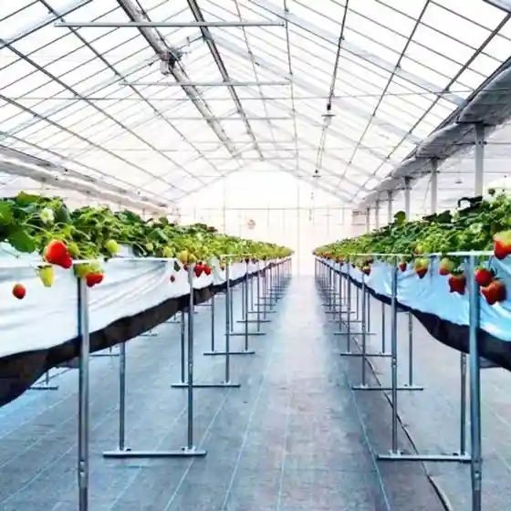
Kawamachi Terrace Yuriage
Post-quake riverside terrace and memorial-area gateway
Natori Cycle Sports Center
Coastal cycling hub rebuilt after 2011 with rentals and trails
Michinoku Coastal Trail Natori Center
Trailhead info center for the long-distance coastal path
Yuriage Port Morning Market
Morning seafood market at Yuriage Port